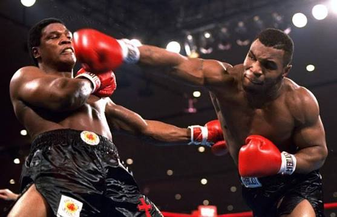
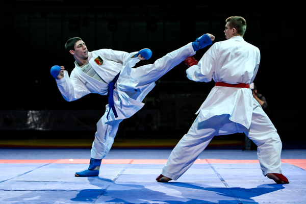
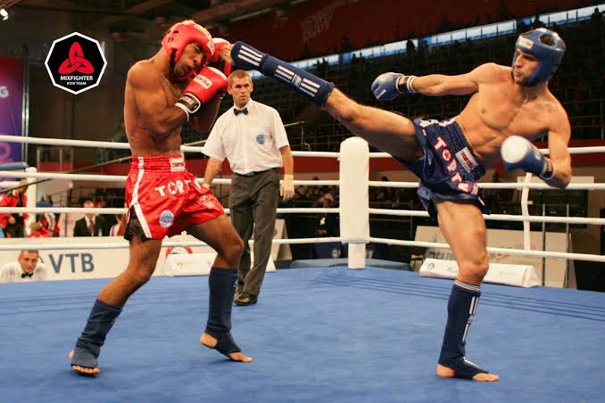
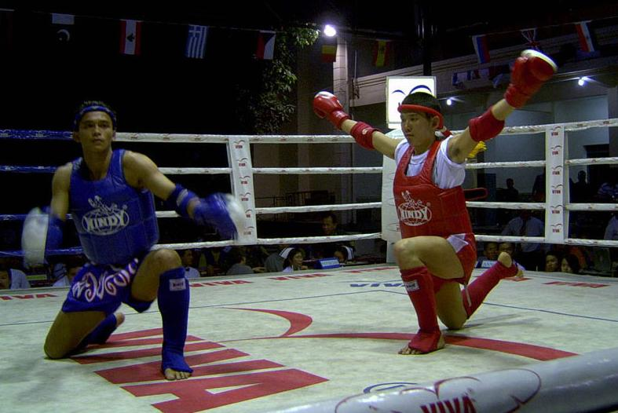

Ударні стилі
Оберіть конкретний вид бойового мистецтва зі списку нижче:
Бокс
Класичний, контактний вид спорту, єдиноборство, в якому спортсмени наносять один одному удари кулаками в спеціальних рукавичках. Рефері контролює бій, який триває до 12 раундів (професійний бокс -12 раундів, аматорський бокс -3 раунди). Перемога боксера у випадку, якщо суперник збитий з ніг і не може піднятися протягом десяти секунд (нокаут) або якщо він отримав травму, яка не дозволяє продовжувати бій (технічний нокаут). Якщо після встановленої кількості раундів поєдинок не був припинений, то переможець визначається оцінками суддів.
Найбільш ранні свідоцтва подібних змагань відображені ще на шумерських, єгипетських і мінойських рельєфах. Турніри з кулачних боїв, що нагадує бокс, проходили ще в Стародавній Греції. По-справжньому бокс став спортивним єдиноборством в 688 році до н. е., коли кулачні бої були вперше включені в програму античних Олімпійських ігор. Сучасний бокс зародився в Англії на початку XVIII століття.
У деяких країнах існують власні різновиди боксу: французький бокс (симбіоз савата, англійського боксу і фехтування на тростинах) у Франції, летхвей в М'янмі, муай-тай в Таїланді; тому часто використовують термін "англійський бокс".
Бокс є олімпійським видом спорту.

Карате
Японське мистецтво самозахисту за допомогою ударів, блоків та рухів. Удари завдаються як руками (кулаками, ребром долоні, відкритою рукою, ліктями), так і ногами (стопами, колінами). У різних стилях карате також вчать ударам у больові точки та життєво важливі ділянки, використанню захватів, викручуванню суглобів, замкам, утримуванням та кидкам. Людину, що практикує карате, називають каратистом. На даний момент близько 100 мільйонів людей на п'яти континентах і в 192 країнах займаються різними стилями карате, що робить його справді глобальним видом спорту.

Кікбоксинг
Динамічний вид спортивного єдиноборства, у якому поєднуються техніка боксу з ударами ногами, запозиченими зі східних бойових мистецтв, зокрема карате, муай тай та тхеквондо. У сучасному значенні кікбоксинг є регламентованим видом спорту, що включає різні дисципліни з чітко визначеними правилами, які встановлюються міжнародними організаціями (зокрема WAKO). У ширшому вжитку термін "кікбоксинг" іноді використовується як узагальнююча назва для ударних єдиноборств, у яких дозволені удари руками та ногами.

Муай-тай (Тайський бокс)
Мистецтво "вісьмох кінцівок", що походить з Таїланду і практикується у багатьох частинах світу. В основі мистецтва лежить ударна техніка (удари руками і ногами). Муай тай походить від бойового мистецтва муай боран, а також має схожість з прадал сереєм (Камбоджа), летвеєм (М'янма), тамоєм (Малайзія) і лаоським боксом (Лаос). Муай тай має довгу історію в Таїланді, де є національним спортом.
Муай тай також називають "бокс восьмируких", тому що в ньому широко та різноманітно використовуються руки, гомілки, лікті та коліна (тобто вісім ударних поверхонь). Таким чином, боєць має для завдавання удару вісім "контактних точок", на відміну від двох у боксі (кулаки) або чотирьох у кікбоксингу (кулаки, ступні). Муай тай по праву вважають одним із найжорстокіших видів бойових мистецтв на планеті.
